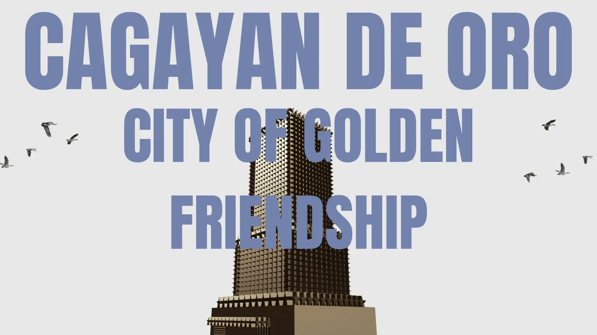
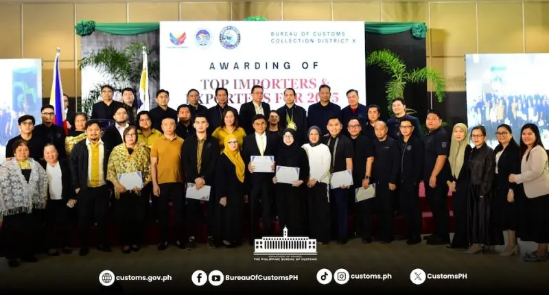
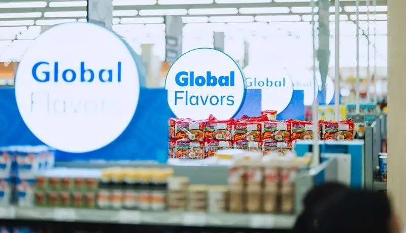

Learn More

The Cagayan de Oro Chamber of Commerce serves as a bridge between businesses, communities, and opportunities. We are committed to supporting local entrepreneurs, promoting economic growth, and strengthening business connections through collaboration, advocacy, and community development. Together, we aim to build a thriving business environment and a stronger local economy for Cagayan de Oro.
Recent Events
Nestle Working with CDO Factories
Source: The Mindanao Herald

BOC-CDO Celebrated 50th Anniversary
Source: PortCalls

SM Supermarket reopens with Global Flavors
Source: PhilStar Global
Weather Section
The current temperature in Cagayan de Oro City is
Temperatures for the next three days: